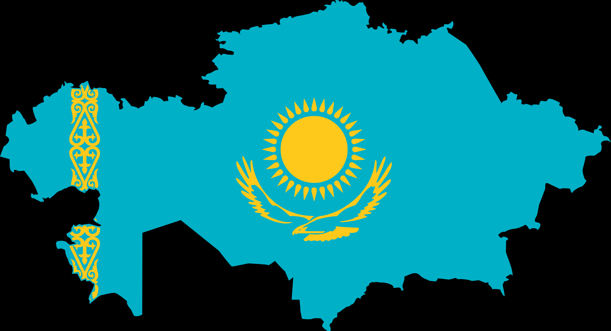

WFWF
WFWF
Қазақстанның алып жатқан территориясы Қазақстан Республикасы Еуразия құрлығының орталық бөлігінде орналасқан. Республиканың жерінің ауданы — 2 727 300 км². Жер шарының халық мекендеген кұрлық бөлігінің 2%-ы және Еуразия ауданының 5%-ы елдің үлесіне тиеді. Аумағының өлшемі жөнінен ол әлем елдерінің алғашқы ондығына кіреді және ішкі құрлықтық мемлекеттердің ең ірісі болып саналады. Жерінің көлемі жөнінен дүние жүзінде 9-шы орын алады. Жалпы аумағы бүкіл жер шары көлемінің 2%-ын, Азияның 6,1 %-ын құрайды. Еуразия құрлығында Ресей, Үндістан, Қытайдан кейін төртінші орында, ал ТМД елдерінің ішінде Ресейден кейін екінші орында тұр.
| # | Аты | аумағы(км^2) |
|---|---|---|
| 1 | Ресей | 17 125 187 |
| 2 | Канада | 9 976 139 |
| 3 | Қытай | 9 598 962 |
| 4 | АҚШ | 9 519 431 |
| 5 | Бразилия | 8 511 965 |
| 6 | Аустралия | 7 686 850 |
| 7 | Үндістан | 3 287 590 |
| 8 | Аргентина | 2 766 890 |
| 9 | Қазақстан | 2 724 902 |
| 10 | Алжир | 2 381 740 |
Қазақстанның аумағында ірілі-ұсақты 48 мыңнан астам көлдер және 3 мыңға жуық бөгендер бар. Климат жағдайына байланысты көлдердің көбі Қазақстанның солтүстігіне қарай орналасқан. Олардың ішінде каспий теңізі,Арал теңізі және Балқаш,Зайсан Алакөл сияқты ірі көлдерден басқа,көбі (94пайыз) көлемі бір шаршы киллометрден кем шығын көлдер. Көлдердің барлығыдерлік тұйық көлдер. Олардың деңгейі ауық-ауық өзгеріп отырады.Көбінің суы тұзды, сондықтан тұнба тұзды болады, олардан тұз өндіріледі. Қазақстанда ауданы 100 шаршы километрден астам 22 көл бар.Олар республикадағы көлдердің бүкіл ауданының 60 пайызын алып жатыр[1]. Қазақстанның батысында Еділдің төменгі ағысы, Каспий маңы мен Тұран ойпаты, шығысында Алтай таулары, солтүстігінде Батыс Сібір жазығы, ал оңтүстігінде Қызылқұм шөлі мен Тянь-Шань тау жүйесі орналасқан. Батысынан шығысына дейін - 3000 км, солтүстіктен оңтүстікке дейін - 1600 км. Республиканың халқы 17,4 млн. адамнан асады.[2] Қала халқының үлесі 56%-ды құрайды. Қазақстан халқының орналасу тығыздығы 1 шаршы километр жерге 6,6 адамнан келеді. Республика жерінің шеткі нүктелері 55°26'- 40°56' с. е. және 45°27'-87°18' ш. б. аралығында орналасқан.